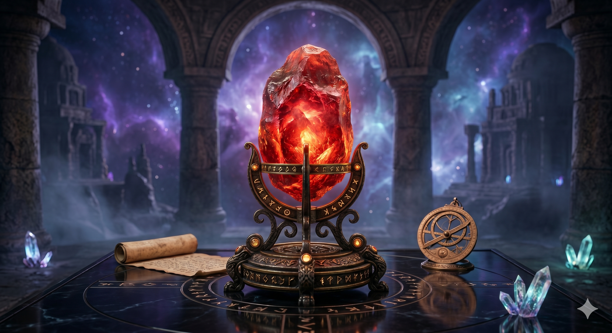
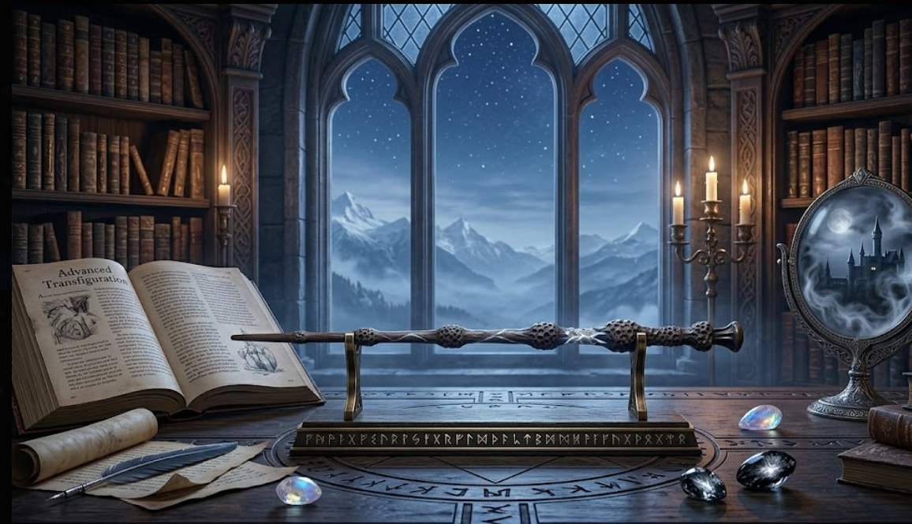
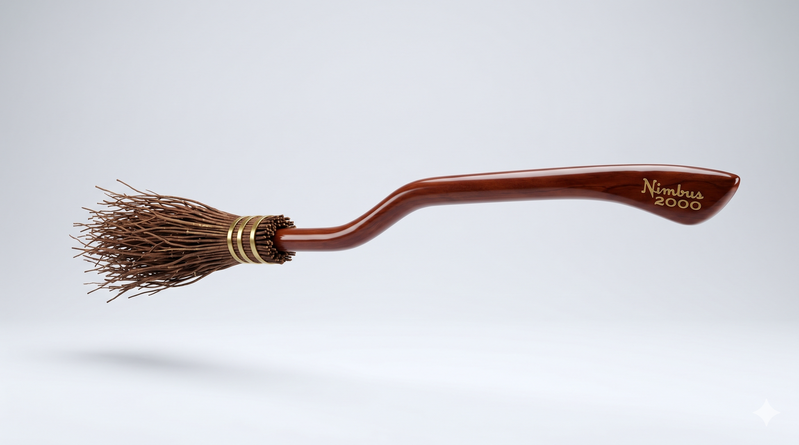
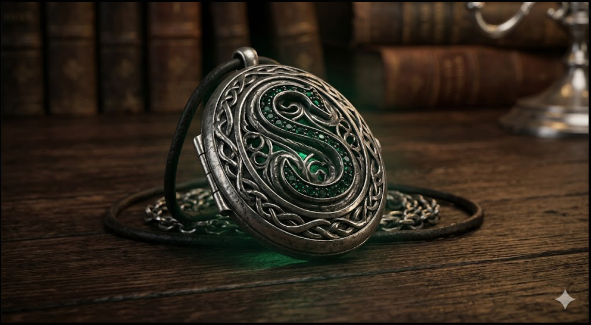
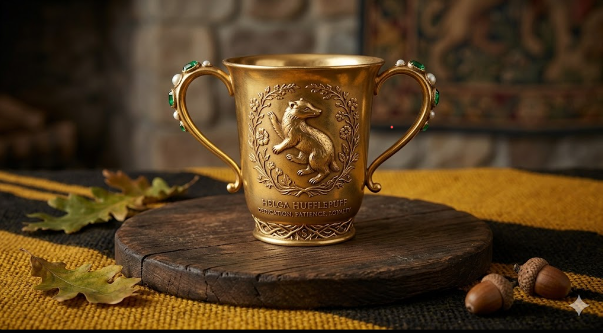
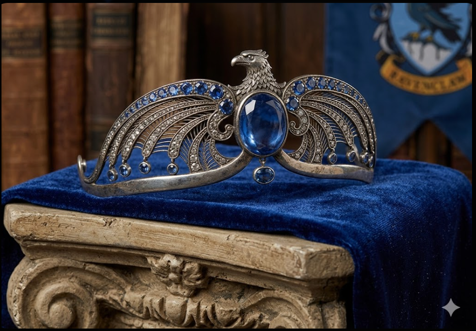
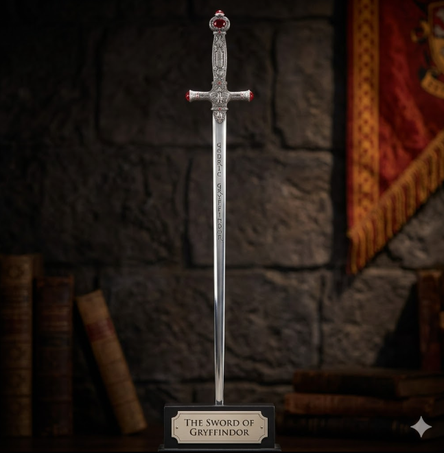
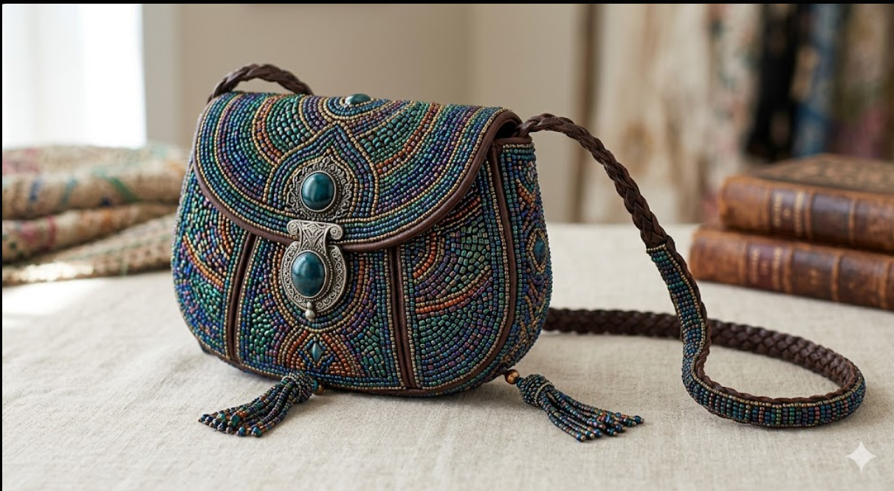

Objects of unparalleled power, legend, and historical significance.


Items imbued with dark magic, meant to cause harm, control, or achieve dark ends.


Magical objects historically tied to or heavily used within Hogwarts School.


Specialized wizarding inventions used for investigation, detection, or transportation.


Curiosities from the era of Newt Scamander and Gellert Grindelwald.